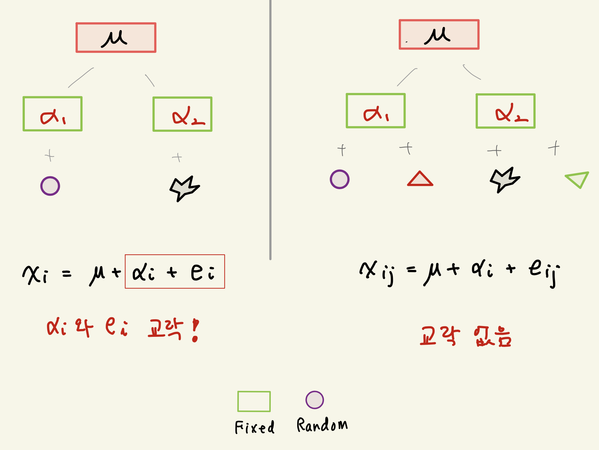
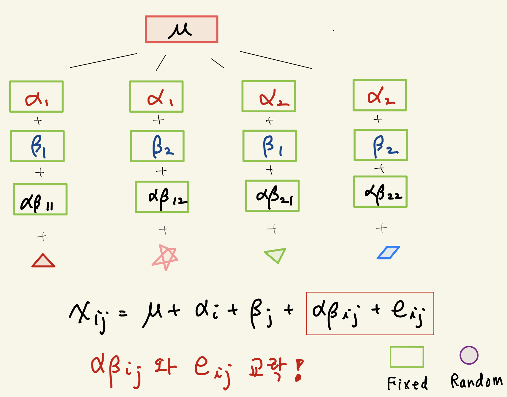
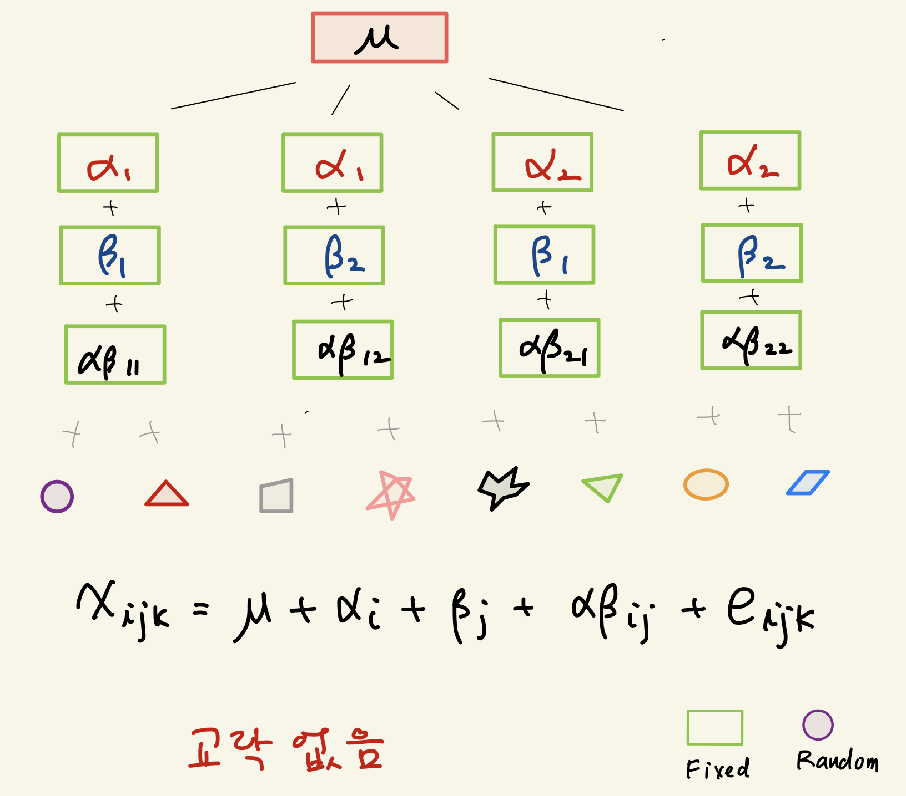

부록 D — 교락
교락(confounding)은 실험 또는 표본 추출의 방법에서 서로 다른 두 효과가 섞여서 자료를 통하여 구별할 수 없는 경우를 말한다. 실험계획에서 교락은 대부분 처리 효과와 오차/임의효과를 구별할 수 없는 경우에 발생한다.
여러분이 반복이 없는 이원배치법에서는 상호작용과 오차가 교락되어 상호작용에 대한 추론을 할 수 없다고 배웠다.
D.0.1 일원배치
이러한 교락의 개념을 이해하기 위하여 가장 간단한 실험 계획인 일원배치를 생각하고 반복이 있는 경우와 없는 경우를 생각해 보자.

- 반복이 없는 일원배치
위의 그림에서 반복이 없는 일원배치에서는 처리효과와 실험단위(오차항)가 교락되어 구별할 수 없다.
예를 들어 철수에게는 A 약을 처방하고 영이에게는 B 약을 처방한 경우, 만약 철수의 치료 효과가 영이보다 좋으면 A 약의 효과가 더 좋다고 말할 수 있는가? 이런 경우 약의 효과인지 실험 대상인 개인의 특성인지 알 수 없다.
반복이 없는 일원배치에서는 효과의 차이를 알 수 있는 통계량이 두 관측값의 차이 \(x_1 - x_2\) 밖에 없으며 이를 모형식으로 보면 다음과 같다.
\[ x_1 - x_2 = \alpha_1 - \alpha_2 + e_1 - e_2 \]
즉 처리 효과 \(\alpha_i\)와 오차 \(e_i\)의 효과를 분리해야 하는데 사용할 수 있는 통계량이 하나 밖에 없어서 처리효과에 대한 추론이 불가능하다.
여기서 유의할 점은 두 관측값의 차이 \(x_1 - x_2\) 와 평균으로부터 편차 \(x_1 -\bar x\)는 기본적으로 같은 정보를 가진 통계량이다.
\[ x_1 -\bar x = \frac{x_2 - x_1}{2} \]
- 반복이 있는 일원배치
반복이 있는 일원배치의 경우 우리는 2개의 편차를 만들 수 있으며 두 편차가 가지고 정보에서 처리 효과에 대한 정보를 분리해 낼수 있다.
\[ \begin{aligned} x_{11} - \bar { \bar x } & = ( x_{11} - \bar x_{1.}) + ( {\bar x}_{1.} - \bar { \bar x }) \\ & = \frac{1}{2} \left [ (-1)x_{12} +(1) x_{11} + (0)x_{21} + (0) x_{22} \right ] \\ &~ + \frac{1}{4} \left [ (1)x_{12} +(1) x_{11} + (-1)x_{21} + (-1) x_{22} \right ] \\ & = ( e_{11} - {\bar e}_{1.} ) + ( [\alpha_1 - \bar \alpha] - [ {\bar e}_{1.} - \bar {\bar e} ]) \end{aligned} \]
반복이 있는 일원배치에서 잔차제곱합 \(MS_E\)는 \(x_{ij} - \bar x_{i.}\)가 지닌 정보, 즉 오차항의 분산에 대한 정보를 가지고 있다. 또한 \(MS_A\)는 \(\bar x_{i.}- \bar { \bar x }\) 가 지닌 정보, 즉 오차항의 분산과 처리 효과의 정보 모두 가지고 있다. 이러한 사실은 각 평균제곱합의 기대값을 보면 알 수 있다.
제곱합의 기대값을 구하는 방법은 섹션 C.3.3 을 참조하자.
\[ E (MS_E) = \sigma_E^2, \quad E(MS_A) = \sigma^2_E + r \frac {\sum_i^a (\alpha_i - \bar \alpha)^2}{a-1} \]
따라서 처리효과가 있는지에 대한 검정은 \(MS_E\)와 \(MS_E\)의 비(ratio)를 이용하여 검정한다(F-검정).
D.0.2 완전 랜덤화 이원배치
이제 이원배치에서 반복이 없는 경우와 있는 경우를 살펴보자.
D.0.2.1 반복이 없는 이원배치

반복이 없는 이원배치는 관측자료의 편차를 각 효과에 대한 편차들로 다음과 같이 분해할 수 있다.
\[ \underbrace{ ( {x}_{ij} - \bar{\bar {x}} )}_{\text{total deviation}}= \underbrace{( {\bar x}_{i.} - \bar{\bar {x}} ) }_{\text{A effect}} + \underbrace{( {\bar x}_{.j} - \bar{\bar {x}} ) }_{\text{B effect}} + \underbrace{ ( x_{ij} -{\bar x}_{i.} - {\bar x}_{.j} + \bar{\bar {x}} )}_{\text{(A x B) + residual}} \] 위의 분해에서 이원배치 모형식을 이용하여 마지막 항 \(x_{ij} -{\bar x}_{i.} - {\bar x}_{.j} + \bar{\bar {x}}\) 을 모수와 오차로 표현해보면 다음과 같다.
\[ x_{ij} -{\bar x}_{i.} - {\bar x}_{.j} + \bar{\bar {x}} = [ (\alpha \beta)_{ij} - \bar {(\alpha \beta)}_{i. } -\bar {(\alpha \beta)}_{.j} + \bar {\bar {(\alpha \beta)}} ] + [ e_{ij} - \bar {e}_{i. } -\bar {e}_{.j} + \bar {\bar {e}}] \tag{D.1}\]
위의 식을 보면 편차 \(x_{ij} -{\bar x}_{i.} - {\bar x}_{.j} + \bar{\bar {x}}\) 는 상호작용에 대한 정보와 오차항의 정보가 섞여 있고 더 이상 분리할 수 없음을 알 수 있다. 따라서 상호작용과 오차항은 교락되어 있다.
D.0.2.2 반복이 있는 이원배치

반복이 있는 이원배치는 관측자료의 편차를 각 효과에 대한 편차들로 다음과 같이 분해할 수 있다. 주목할 점은 반복이 있기 떄문에 반복이 없는 경우보다 하나의 항 \(x_{ijk} - {\bar x}_{ij.}\) 이 추가된다.
\[ \underbrace{ (x_{ijk} - \bar{\bar {x}}) }_{\text{total deviation}} = \underbrace{( {\bar x}_{i..} - \bar{\bar {x}} ) }_{\text{A effect}} + \underbrace{( {\bar x}_{.j.} - \bar{\bar {x}} ) }_{\text{B effect}} + \underbrace{ ( {\bar x}_{ij.} -{\bar x}_{i..} - {\bar x}_{.j.} + \bar{\bar {x}} )}_{\text{A x B}} + \underbrace{ ( x_{ijk} - {\bar x}_{ij.} )}_{\text{residual}} \]
반복이 있는 이원배치 모형에서 상호작용에 대한 편차는 반복이 없는 경우의 식 @ref(eq:inter)과 유사하게 다음과 같이 표시할 수 있다.
\[ x_{ij.} -{\bar x}_{i..} - {\bar x}_{..j} + \bar{\bar {x}} = [ (\alpha \beta)_{ij.} - \bar {(\alpha \beta)}_{i. } -\bar {(\alpha \beta)}_{.j} + \bar {\bar {(\alpha \beta)}} ] + [ e_{ij.} - \bar {e}_{i.. } -\bar {e}_{.j.} + \bar {\bar {e}}] \]
또한 잔차에 대한 편차는 다음과 같이 표시된다.
\[ x_{ijk} - {\bar x}_{ij.} = e_{ijk} - \bar {e}_{ij. } \] 이제 잔차에 대한 편차는 순수허게 오차항만의 정보를 가지고 있고 상호작용에 대한 편차는 상호작용과 오차에 대한 정보를 가지고 있다. 따라서 두 편차로 만든 두 개의 제곱합을 이용하면 상호작용에 대한 효과를 분리해낼 수 있다.
따라서 상호작용 효과가 있는지에 대한 검정은 \(x_{ij.} -{\bar x}_{i..} - {\bar x}_{..j} + \bar{\bar {x}}\) 로 계산된 \(MS_{(A \times B)}\)와 \(x_{ijk} - {\bar x}_{ij.}\) 로 만들어진 \(MS_E\)의 비(ratio)를 이용하여 검정한다(F-검정).